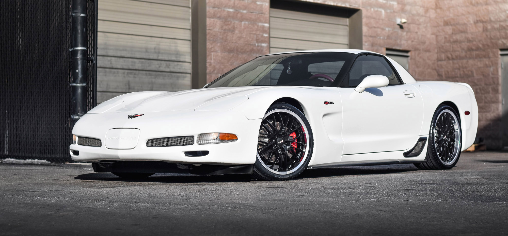

Para mim, um dos Corvettes mais charmosos e com uma pegada que mistura o clássico com uma modernidade sutil. É um carro que me faz suspirar só de lembrar das linhas.
A Origem: O C5 nasceu com a missão de modernizar o Corvette, lá no final dos anos 90 (a produção começou em '97 e foi até 2004). Ele veio para substituir o C4 e trouxe uma plataforma completamente nova, a primeira grande reformulação desde o C1! Isso já mostrava a ambição da Chevrolet em fazer algo realmente especial. O Design: Ele abandonou um pouco as linhas mais "quadradas" do C4 e trouxe algo mais fluido e aerodinâmico. Aqueles faróis escamoteáveis eram um charme à parte, a última geração do Corvette a ter essa identidade! A traseira com as quatro lanternas redondas, marca registrada do Corvette, estava lá, mas com um toque mais integrado e moderno. Para mim, um equilíbrio perfeito entre a tradição e o futuro. E a versão FR-C (Fixed Roof Coupé) e o Z06 com aquele visual mais agressivo... Lindo demais!
Ficha Técnica (geralmente falando do motor LS1): Motor: Geralmente um V8 5.7L LS1, um motor Small Block que dispensa apresentações! Robusto, cheio de torque e com um ronco... ah, que ronco! Potência: As versões variavam, mas ficavam na casa dos 345 a 350 cavalos nas versões de entrada. No Z06, com o LS6, passava dos 400 hp! Transmissão: Manual de 6 marchas ou automática de 4 (posteriormente 6). A manual, claro, para quem gosta de sentir cada engate! Tração: Traseira, como um bom esportivo deve ser! 0 a 100 km/h: Aqui a brincadeira ficava séria! As versões básicas do C5 faziam o 0 a 100 km/h na casa dos 4,7 a 5 segundos, dependendo da transmissão e do ano. Já o endiabrado Z06... esse baixava para a casa dos 3,9 segundos! É pra colar no banco e sentir a força bruta desse V8 empurrando! O C5 é um carro que marcou uma geração, trouxe muita tecnologia para a linha Corvette e, na minha opinião, envelheceu muito bem no quesito design. Um clássico moderno que ainda faz muita gente virar o pescoço na rua!